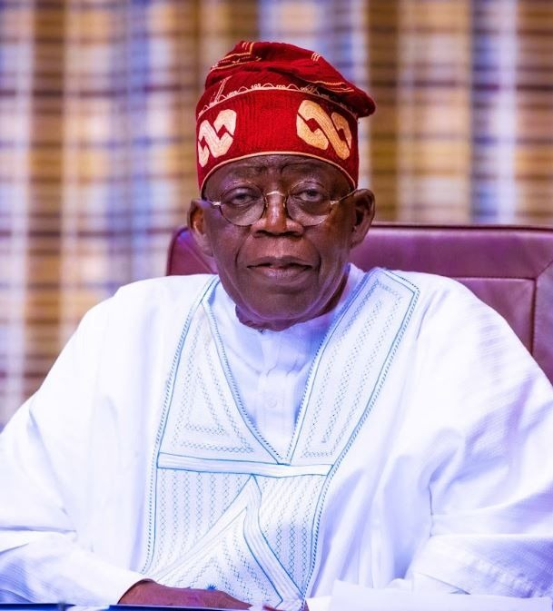

President Bola Ahmed Tinubu GCFR — Distinguished Statesman, Reformer, and Visionary Leader.
Champion of Renewed Hope
Asiwaju Bola Ahmed Tinubu, GCFR, is the President and Commander-in-Chief of the Armed Forces of the Federal Republic of Nigeria and the Grand Patron of the City Boy Movement. He is a distinguished statesman, reformer, and visionary leader whose political philosophy is anchored on progressive governance, economic transformation, and inclusive national development.
Born on March 29, 1952, President Tinubu is widely regarded as one of the most influential political figures in modern Nigerian history. His leadership journey is defined by decades of public service, democratic activism, and institution-building, particularly his role in strengthening Nigeria’s democratic framework.
He served as the Governor of Lagos State from 1999 to 2007, where his administration laid the foundation for Lagos’ transformation into Africa’s foremost megacity. His tenure was marked by groundbreaking reforms in revenue generation, infrastructure development, education, healthcare, and governance systems.
Revolutionized internal revenue generation and fiscal management.
Pioneered the blueprint for modern urban development in Nigeria.
Massive investments in healthcare, education, and social infrastructure.
As the national leader of the All Progressives Congress (APC) for several years, President Tinubu played a central role in uniting progressive forces across Nigeria and was instrumental in shaping the political realignment that strengthened democratic competition in the country.
His ability to build bridges across diverse interests and his unwavering commitment to the democratic process have solidified his place as a master strategist and a leader of leaders.
Masterminded the largest political merger in Nigerian history.
Dedicated to strengthening Nigeria's democratic institutions.
As Grand Patron of the City Boy Movement, President Tinubu embodies the ideals of youth empowerment, civic participation, and grassroots political engagement. The movement aligns with his Renewed Hope Agenda, focusing on economic growth, job creation, social inclusion, and sustainable national progress.
President Bola Ahmed Tinubu’s legacy continues to inspire a new generation of Nigerians, particularly the youth, to participate actively in nation-building, leadership, and the pursuit of a prosperous and united Nigeria.
"The future of our great nation depends on the energy, innovation, and leadership of our youth. We must continue to build bridges to the future."